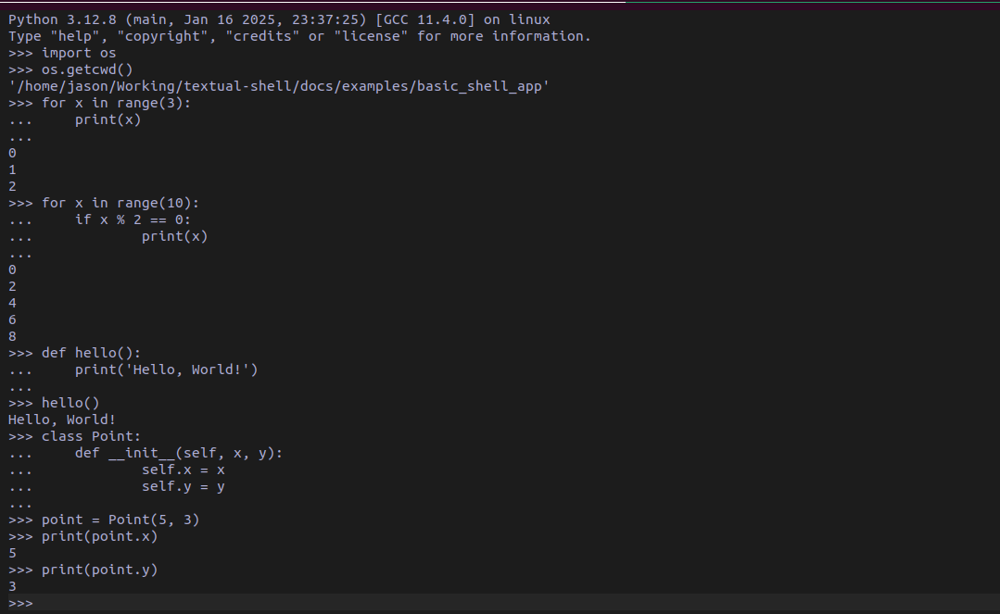

Python

This command will spawn a interactive python interpreter in a child process. Any text/command that is entered is sent to the stdin of the child, and the result is read from stdout and stderr. It is then written to a RichLog. This should meet any basic needs but your mileage may vary.
Python
Bases: Command
Command for spawning an interactive python interpreter.
Source code in src/textual_shell/commands/python.py
PythonArea
Bases: ShellArea
Custom TextArea to replicate a python interpreter's interface.
Source code in src/textual_shell/commands/python.py
action_enter_pressed()
Handler for pressing the enter key.
Source code in src/textual_shell/commands/python.py
action_tab()
send_command(text)
Post the Execute message.
Parameters:
| Name | Type | Description | Default |
|---|---|---|---|
text
|
str
|
The command to post. |
required |
Source code in src/textual_shell/commands/python.py
PythonInterpreter
Bases: Screen
Screen to render an interactive python interpreter.
Parameters:
| Name | Type | Description | Default |
|---|---|---|---|
task
|
Task
|
The asyncio task of the job. |
required |
Source code in src/textual_shell/commands/python.py
64 65 66 67 68 69 70 71 72 73 74 75 76 77 78 79 80 81 82 83 84 85 86 87 88 89 90 91 92 93 94 95 96 97 98 99 100 101 102 103 104 105 106 107 108 109 110 111 112 113 114 115 116 117 118 119 120 121 122 123 124 125 126 127 128 129 130 131 132 133 134 135 136 137 138 139 140 141 142 143 144 145 146 147 148 149 150 151 152 153 154 155 156 157 158 159 160 161 162 163 164 165 166 167 168 169 170 171 172 173 174 175 176 177 178 179 180 181 182 183 184 185 186 187 188 189 190 191 192 193 194 195 196 197 198 199 200 201 202 203 204 205 206 207 208 209 | |
action_background_job()
action_kill_interpreter()
Kill the interpreter and return to the main screen
Source code in src/textual_shell/commands/python.py
on_shell_area_execute(event)
async
Execute the python code.
Parameters:
| Name | Type | Description | Default |
|---|---|---|---|
event
|
Execute
|
The message with the code. |
required |
Source code in src/textual_shell/commands/python.py
read_stderr()
async
Coroutine for reading stderr and updating the RichLog.
Source code in src/textual_shell/commands/python.py
read_stdout()
async
Coroutine for reading stdout and updating the RichLog.
Source code in src/textual_shell/commands/python.py
setup()
async
Spawn the child process to run the python interpreter. Also create the tasks for reading stdout and stderr.
Source code in src/textual_shell/commands/python.py
update_from_stderr(error)
async
RunPythonInterpreter
Bases: Job
Creates the python interpreter screen and installs it onto the screen stack
Source code in src/textual_shell/commands/python.py
execute()
async
Execute the interpreter.